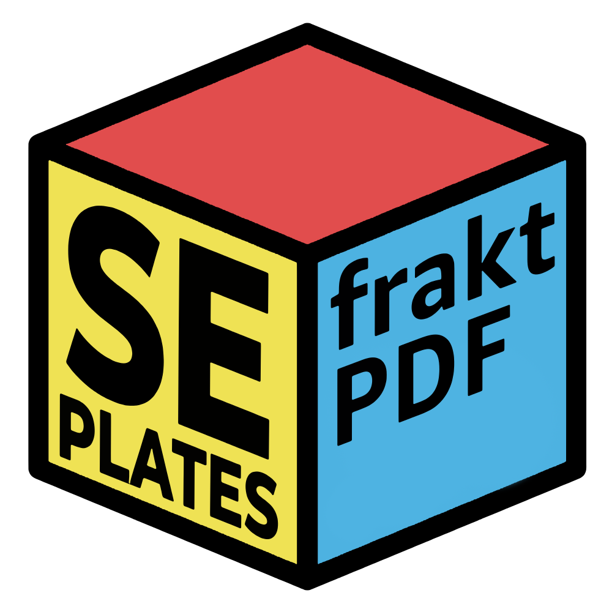

eller välj en PDF från datorn
Ge den ett namn och välj ett valfritt snabbkommando.
Välj hur filen ska sparas.
Anpassa fraktPDF efter ditt arbetsflöde.
Välj en skrivare för att skriva ut utan dialogruta.
Standard för utskrift av etiketter.
En ny version av fraktPDF finns.